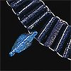
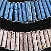
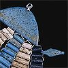

|
Jewellery workshop
Click on the objects in the scene above to learn more about a jewellery workshop.
The ancient Egyptians made many different types of jewellery. Craftsmen created necklaces, bracelets, collars, earrings and more from gold, stones and glass.

The work in a jewellery workshop was often divided among many people. For instance to make a necklace, one person would make the beads, another would drill the holes in the beads, and a third would thread them onto papyrus string.

Details from the above collar
back to explore menu...
|